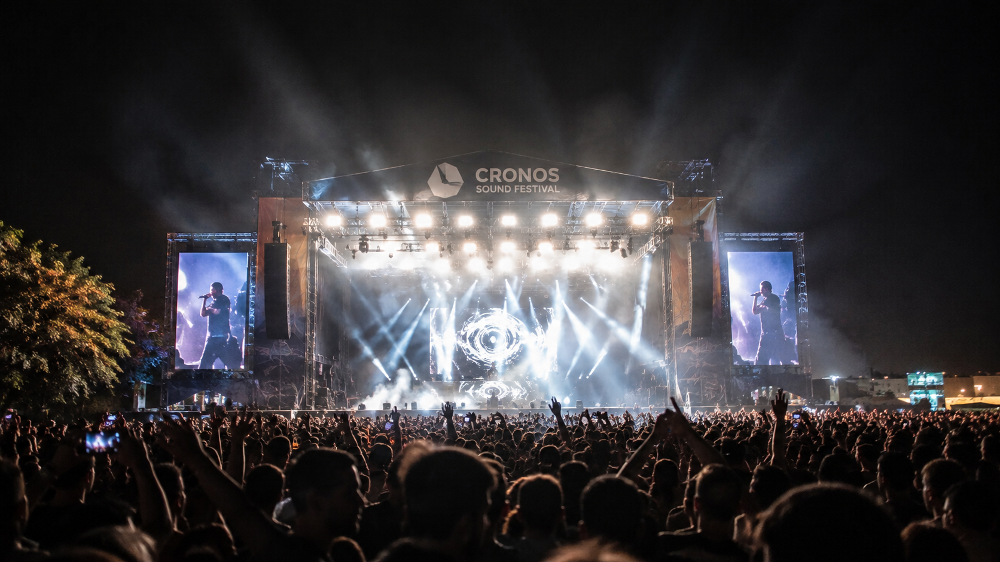
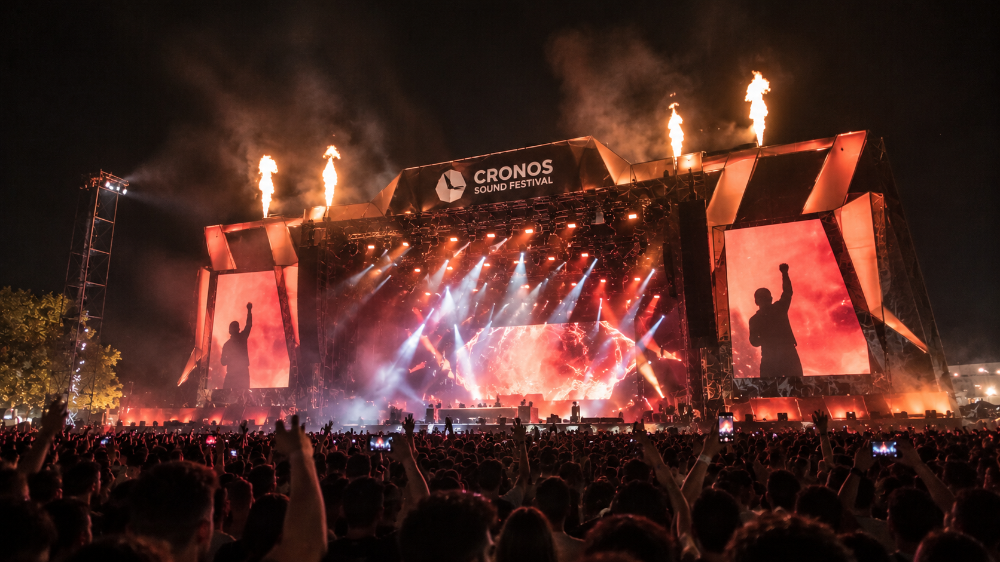
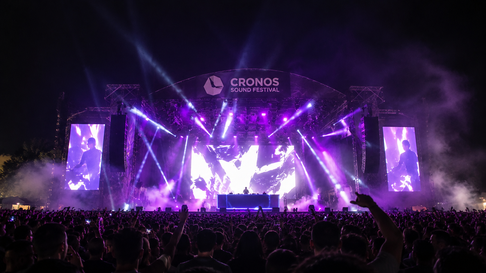

El escenario Gran Jam estará dedicado a la música urbana y la música electrónica, combinando ritmos actuales y sonidos llenos de energía. Habrá actuaciones para disfrutar de diferentes ambientes y no parar de bailar durante todo el festival.
Un espacio perfecto para los amantes de la música urbana y electrónica.

El escenario Titus Carpa estará dedicado al reguetón antiguo y al Trap, recuperando grandes ritmos y sonidos que han marcado diferentes épocas de la música urbana. Será un espacio lleno de ambiente, nostalgia y energía.
Un lugar perfecto para disfrutar de los clásicos y los nuevos sonidos urbanos.

El escenario Razzmatazz estará dedicado a los estilos Hip-Hop y Jazz, ofreciendo una combinación de ritmos urbanos y sonidos más instrumentales. Habrá actuaciones llenas de personalidad, energía y talento para todos los amantes de estos géneros.
Un espacio perfecto para disfrutar de dos estilos musicales diferentes.